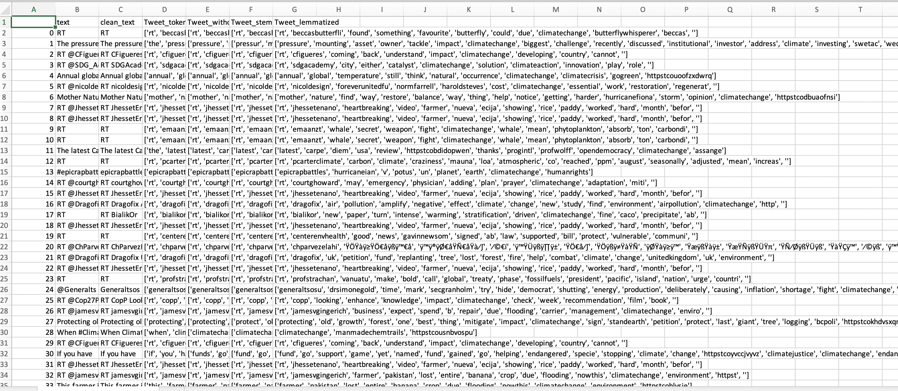
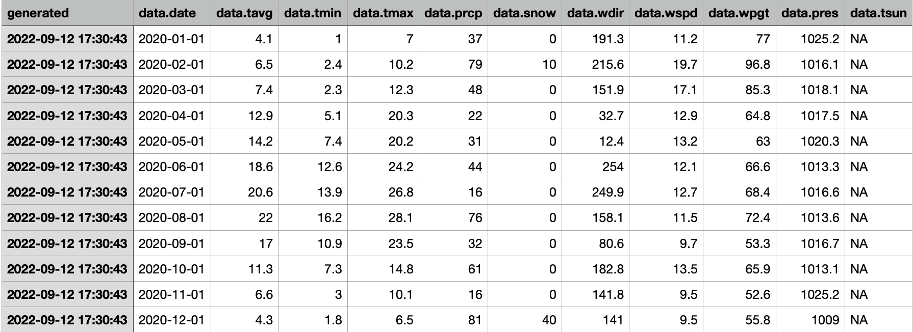
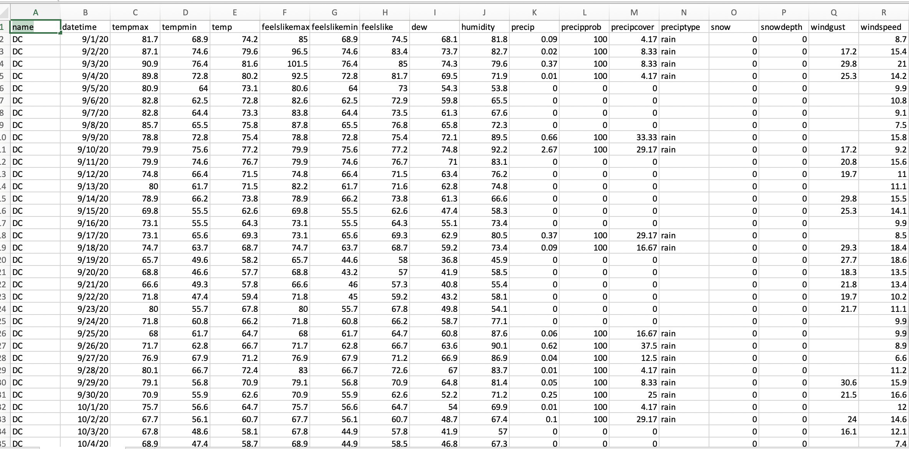

The data is numerous types of information formatted in a specific way. As a result, data collecting is defined as the act of obtaining, measuring, and analyzing correct data from a number of relevant sources in order to identify solutions to study problems, answer questions, evaluate outcomes, and forecast trends and probability.
During data collecting, one must identify data categories, data sources, and data collection methods. It is the systematic process of acquiring and measuring information on variables of interest in order to answer specified research questions, test hypotheses, and evaluate outcomes. Data gathering is a component of research that is shared by all fields of study, including physical and social sciences, humanities, business, and so on. While procedures differ depending on the discipline, the emphasis on ensuring accurate and honest collection remains constant.
Data collecting is a more specialized process in which researchers devise and implement methods to acquire certain sets of data. However, in both the business and research contexts, the obtained data must be correct in order for analytics discoveries and research results to be valid.
Some of the difficulties encountered when gathering data include the following:
Problems with data quality. Errors, inconsistencies, and other difficulties are common with raw data. In an ideal world, data collecting measures would be intended to avoid or reduce such issues. However, in most circumstances, this is not infallible. As a result, obtained data normally has to be placed through data profiling to discover errors and data cleansing to remedy them.
Obtaining important data. With a wide range of systems to navigate, getting data to analyze can be a hard undertaking for data scientists and other users in a company. The application of data curation strategies aids in the discovery and accessibility of data. This could include, for example, developing a data catalog and searchable indexes.
Choosing which data to collect. This is a critical issue for both raw data collecting and data collection for analytics applications. Collecting unnecessary data adds time, cost, and complexity to the operation. However, throwing out essential data might limit the economic usefulness of a data set and influence analytics outcomes.
Data can be gathered from one or more sources as needed to produce the desired information. A shop, for example, might collect customer data through transaction records, website visits, mobile applications, its loyalty program, and an online survey to monitor sales and the success of its marketing activities. The methods used to collect data vary based on the type of application. Some involve the use of technology, while others are manual procedures.
The is aim to keep the data set structure as consistent as possible between the three main categories of data – weather forecast, historical weather observations and Toxic Emission to the environment.
Weather forecast data: The data is collected to predict the temperature change and snowfall prediction in DC area. The goal is to predict the temperature change in the environment using these forcast data.
Historical weather observations: Historical weather data is collected to analyse the change in weather mainly temperature to see the impact on climate over the years. The historical data gives an overview of how there is a variation in the weather and how it has changed over the years.
Toxic Emission to the environment: The data is collected to see what toxins are being releases to the environment by human activities as basic as agriculture and waste food disposal. Highly toxic elements like Methane, Nitroger, Carbon dioxide and Biomass is being release to the envirment by what we call normal food disposal methods.
| Data Set | Data Set Description |
|---|---|
|

|
|
|

|
|
|

|
|
Crop Residual and food disposal Emisiion data: This data gives an overview of all kinds of emmission due to basic human activity like agriculture and waste food disposal. This data can be used as an example to show human impact on climate change.
Airpollution data: This data gives an overview of air pollution in DC for the year 2020-2022. This data can be used to show the impact of air pollution on climate change.
Temperature and Air pollutant data for the year 2016 to 2021: This data gives an overview of temperature and air pollutant data for the year 2016 to 2021. This data can be used to show change in temerature and air pollution in DC.
Climate gov Analysis in temperature variation and it's effects : This website gives analysis on global average surface temparature, recent temerature trends, past and future change in global temperature. This analysis helps us understand the human imapct on climate change and its consequences.
{kind=link}
{kind=link}
{kind=link}